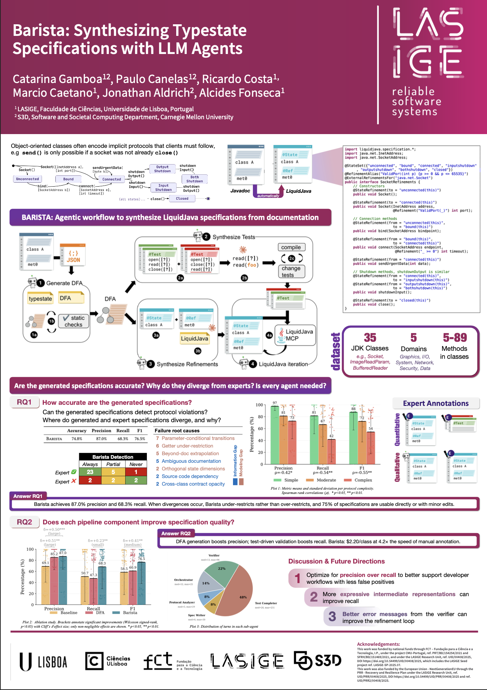

ASE 2026, Munich, Germany
Barista
Synthesizing Typestate Specifications with LLM Agents
ASE 2026 - International Conference on Automated Software Engineering, CORE A*.
Java classes come with rules nobody writes down formally: connect a socket before sending data, never reuse a closed stream. Barista reads those rules from the Javadoc and turns them into LiquidJava specifications, so the compiler can catch violations before the code runs.

Best PhD Poster Award LASIGE Workshop 2026
The protocol hidden in a Javadoc
The paper's running example is java.net.Socket. Its documentation describes seven states in prose. Barista models them as the state machine below (Figure 2 in the paper), then writes the annotations that let LiquidJava enforce it. Build a program and see which calls the specification accepts.
- Create a socket to start.
Socket
Creates an unconnected Socket.
Socket
Creates a stream socket and connects it to the specified port number at the specified IP address.
- Throws:
IllegalArgumentException- if the port parameter is outside the specified range of valid port values, which is between 0 and 65535, inclusive.
bind
Binds the socket to a local address.
- Throws:
IOException- if the bind operation fails, or if the socket is already bound.
connect
Connects this socket to the server with a specified timeout value.
- Throws:
IllegalArgumentException- if endpoint is null or is a SocketAddress subclass not supported by this socket, or if timeout is negative
sendUrgentData
Send one byte of urgent data on the socket.
shutdownInput
Places the input stream for this socket at "end of stream".
shutdownOutput
Disables the output stream for this socket.
close
Closes this socket. Once a socket has been closed, it is not available for further networking use (i.e. can't be reconnected or rebound).
Excerpts from the JDK 17 Javadoc. Underlined: the phrases that imply the protocol.
@StateSet({"unconnected", "bound", "connected",
"inputshutdown", "outputshutdown",
"bothshutdown", "closed"})
@RefinementAlias("ValidPort(int p) {p >= 0 && p <= 65535}")
@ExternalRefinementsFor("java.net.Socket")
public interface SocketRefinements {
@StateRefinement(to = "unconnected(this)")
public void Socket();
@StateRefinement(to = "connected(this)")
public void Socket(InetAddress address,
@Refinement("ValidPort(_)") int port);
@StateRefinement(from = "unconnected(this)",
to = "bound(this)")
public void bind(SocketAddress bindpoint);
@StateRefinement(from = "unconnected(this)",
to = "connected(this)")
@StateRefinement(from = "bound(this)",
to = "connected(this)")
public void connect(SocketAddress endpoint,
@Refinement("_ >= 0") int timeout);
@StateRefinement(from = "connected(this)")
public void sendUrgentData(int data);
@StateRefinement(from = "connected(this)",
to = "inputshutdown(this)")
@StateRefinement(from = "outputshutdown(this)",
to = "bothshutdown(this)")
public void shutdownInput();
@StateRefinement(from = "connected(this)",
to = "outputshutdown(this)")
@StateRefinement(from = "inputshutdown(this)",
to = "bothshutdown(this)")
public void shutdownOutput();
@StateRefinement(to = "closed(this)")
public void close();
}From Javadoc to a checked specification
Figure 1 of the paper shows the agentic workflow. Each numbered step is an agent with a tool that checks its output, and the agent loops on that feedback until the check passes. Click a step to see what it produces for Socket.
Built with Claude Code and the Claude Agent SDK (Sonnet 4.6). The checks are MCP tools, and the typestate and LiquidJava guides are provided as skills.
How well it works
We compared Barista's specifications with ones written by two experts for 29 JDK classes. Barista ran five times on each class, and every run was checked against the experts' test suites: 3,262 test files in total.
Precision. When the specification flags a call as a protocol violation, it is a real violation 87% of the time.
Recall. The specification catches about two thirds of the violations in the expert tests. When it errs, it errs on the permissive side.
Faster than an expert. 7.3 minutes and $2.20 per class, against 31 minutes for a person writing it by hand.
Is the output usable?
We rated one run per class: could a developer start from this specification?
What each component adds
An ablation study: prompting with the documentation alone (baseline), adding the state machine step, and the full pipeline with tests.
- Baseline
- State machine only
- Barista (full)
Show as a table
| Variant | Precision | Recall | F1 |
|---|---|---|---|
| Baseline | 69.1% | 50.7% | 58.5% |
| State machine only | 85.2% | 47.3% | 60.9% |
| Barista (full) | 87.0% | 68.3% | 76.5% |
Where it still falls short
Quality drops as protocols get harder: F1 goes from 88% on simple protocols to 72% on moderate ones and 54% on complex ones. When we traced each divergence from the expert specification to its cause, most turned out to be modeling gaps in the pipeline rather than missing information. The most common one is transitions that depend on an argument's value, which a plain state machine cannot express.
- Modeling gap (78%)
- Information gap (22%)
The benchmark
35 JDK 17 classes with typestate protocols, drawn from Beckman et al.'s study of object protocols in Java. They range from 5 to 89 public methods. Expert specifications, tests and annotation guidelines are in the replication package. Each class links to its Javadoc.
Cite
@inproceedings{gamboa2026barista,
title = {Barista: Synthesizing Typestate Specifications with LLM Agents},
author = {Gamboa, Catarina and Canelas, Paulo and Costa, Ricardo and
Caetano, M{\'a}rcio and Aldrich, Jonathan and Fonseca, Alcides},
booktitle = {Proceedings of the 41st IEEE/ACM International Conference
on Automated Software Engineering (ASE '26)},
year = {2026},
address = {Munich, Germany},
publisher = {ACM},
doi = {10.1145/3832783.3834427}
}